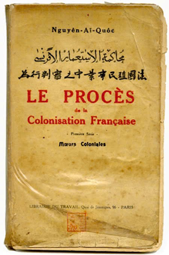
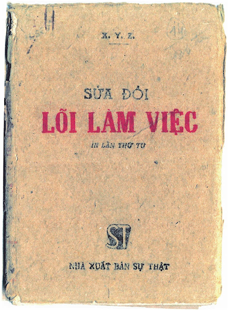
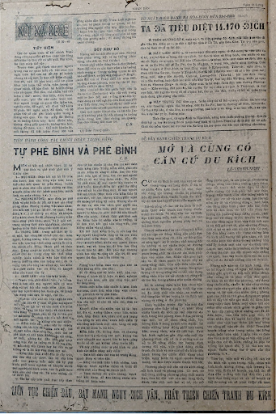

CÁC TÁC PHẨM KHÁC CỦA BÁC

Bản án chế độ thực dân Pháp
Hoàn cảnh ra đời
Ngay từ tuổi thơ, Nguyễn Tất Thành đã chứng kiến sự áp bức, bóc lột tàn bạo của thực dân Pháp đối với nhân dân Việt Nam, từ đó sớm nhận thức thực dân là kẻ thù của dân tộc. Đặc biệt, sau khi gửi “Yêu sách của nhân dân An Nam” đến Hội nghị Versailles và tiếp xúc với “Luận cương về vấn đề dân tộc và thuộc địa” của Lenin, Nguyễn Ái Quốc hiểu rõ bản chất của chủ nghĩa thực dân không chỉ ở Pháp mà trên toàn thế giới. Từ nhận thức ấy, Người đã viết tác phẩm Bản án chế độ thực dân Pháp (Le procès de la colonisation francaise), đây là tác phẩm viết bằng tiếng Pháp trong khoảng những năm 1921-1925 và được xuất bản đầu tiên năm 1925 tại Paris (Thủ đô nước Pháp).
Năm 1946, tác phẩm này đã xuất bản bằng tiếng Pháp tại Hà Nội. Năm 1960, Nhà xuất bản Sự thật đã xuất bản bằng tiếng Việt lần thứ nhất và đã in trong tuyển tập của Hồ Chí Minh.
Nội dung
Bản án chế độ thực dân Pháp gồm 12 chương, trong đó có một số bài đã đăng trên báo Le Paria. Tác phẩm là một thiên phóng sự điều tra sắc sảo, một tác phẩm văn chương “kết hợp chủ nghĩa yêu nước với chủ nghĩa xã hội, mở đầu cho một nền văn học mới, văn học thuộc phạm trù ý thức hệ vô sản”(1, tr 82), một văn kiện lịch sử vô cùng quan trọng.
Nội dung của Bản án chế độ thực dân Pháp “là bản buộc tội không chối cãi, vì nó lấy những tư liệu chính xác nhất ở khắp các thuộc địa Pháp, lấy cả chứng từ của người Pháp ở thuộc địa. Nó có tác dụng thuyết phục trọn vẹn những người hiểu biết nửa chừng, lưu ý người vô tâm, hun thêm lòng căm phẫn của nhân dân thuộc địa và vô sản ở chính quốc. Nó tố cáo từ chủ trương xâm chiếm thuộc địa đến những chính sách, thủ đoạn áp bức bóc lột”(1, tr 84) dã man và tàn khốc của bọn thực dân đối với dân tộc Việt Nam cũng như với các thuộc địa khác trên các mặt chính trị, kinh tế, văn hoá, xã hội mà điều quan trọng là đã nêu lên những luận điểm cơ bản về vấn đề dân tộc và vấn đề thuộc địa., có tác động mạnh mẽ đến diễn biến và ý nghĩa của Cách mạng tháng Tám năm 1945.
Mục đích
• Bản án chế độ thực dân Pháp vạch rõ đối tượng cách mạng, lực lượng cách mạng và giai cấp lãnh đạo cách mạng giải phóng dân tộc.
• Đặt rõ vấn đề giành độc lập dân tộc phải đi đôi với sự nghiệp thống nhất Tổ quốc, khẳng định sự nghiệp đánh đổ chủ nghĩa đế quốc, giải phóng dân tộc là sự nghiệp của quần chúng nhân dân ở các nước thuộc địa và phụ thuộc.
• Cuộc cách mạng giải phóng dân tộc phải đi theo con đường của Cách mạng Tháng Mười Nga, đi theo đường lối của Quốc tế Cộng sản, thể hiện tinh thần cách mạng tiến công, tư tưởng cách mạng triệt để.
Tác phẩm đã làm sáng tỏ thêm quan điểm của Lenin về chủ nghĩa đế quốc, góp phần làm phong phú thêm chủ nghĩa Lenin về vấn đề dân tộc và thuộc địa
Đường Kách Mệnh
Hoàn cảnh ra đời
Cuối thế kỷ XIX – đầu thế kỷ XX, các phong trào yêu nước ở Việt Nam (Cần Vương, Đông Du, Duy Tân, Đông Kinh Nghĩa Thục...) tuy sôi nổi nhưng đều thất bại, do thiếu đường lối đúng đắn.
Trong bối cảnh đó, người thanh niên yêu nước Nguyễn Tất Thành đã ra đi tìm đường cứu nước (năm 1911), trải qua nhiều nước ở châu Á, châu Âu, châu Phi, châu Mỹ để tìm hiểu các học thuyết và con đường cách mạng.
Năm 1920, sau khi đọc “Luận cương về vấn đề dân tộc và thuộc địa” của V.I.Lenin, Người khẳng định: chỉ có chủ nghĩa Marx – Lenin mới là con đường cách mạng đúng đắn để giải phóng dân tộc bị áp bức.
Để truyền bá chủ nghĩa Marx – Lenin vào Việt Nam, tháng 6 năm 1925, Nguyễn Ái Quốc thành lập Hội Việt Nam Cách mạng Thanh niên ở Quảng Châu (Trung Quốc), mở các lớp huấn luyện chính trị cho thanh niên yêu nước.
Các bài giảng trong những lớp huấn luyện ấy được tập hợp, biên soạn và in thành sách “Đường Kách mệnh” (năm 1927), dùng làm tài liệu học tập, tuyên truyền lý luận cách mạng.

Nội dung cơ bản của tác phẩm
Mục đích và tính chất của cách mạng Việt Nam
• Giải thích rõ: “Vì sao chúng ta muốn sống thì phải làm cách mệnh”.
• Khẳng định: cách mạng là sự nghiệp của toàn dân, không phải của riêng ai.
• Đem lịch sử cách mạng các nước (Mỹ, Pháp, Nga) làm tấm gương soi để nhân dân Việt Nam học tập.
• Xác định mục tiêu cách mạng là giành độc lập dân tộc, tự do cho nhân dân, tiến tới xã hội cộng
sản.
Lực lượng và điều kiện tiến hành cách mạng
• Phải có Đảng lãnh đạo: “Cách mệnh trước hết phải có đảng cách mệnh, Đảng có vững thì cách mệnh
mới thành
công.”
• Chủ nghĩa làm cốt của Đảng là chủ nghĩa Lenin.
• Công – nông là gốc cách mệnh, các tầng lớp khác như học trò, nhà buôn, điền chủ nhỏ là bạn
đồng minh của
công nông.
Về đoàn kết quốc tế
• Khẳng định cách mạng Việt Nam là một bộ phận của cách mạng thế giới.
• Chủ trương liên hiệp với các dân tộc bị áp bức và giai cấp vô sản quốc tế để cùng đấu tranh
chống đế quốc,
giành quyền tự do, bình đẳng.
Về xây dựng Đảng và đạo đức người cách mạng
• Nêu rõ tư cách người cách mạng:
• Tự mình phải: cần, kiệm, liêm, chính; chí công vô tư; nói đi đôi với làm; giữ chủ nghĩa cho
vững; không
ham địa vị, không kiêu ngạo, phải khiêm tốn, trung thực, dũng cảm.
• Đối với người: khoan dung, đoàn kết, chân thành, nghiêm túc.
• Làm việc: phải cẩn trọng, quyết đoán, có tổ chức, phục tùng đoàn thể.
⇒ Đây chính là nền tảng đầu tiên của tư tưởng đạo đức cách mạng Hồ Chí Minh.
Về kiến thức lý luận
• Giải thích nhiều khái niệm chính trị mới như: Cách mệnh, Công hội, Dân cày, Quốc tế cộng sản,
Hợp tác
xã...
• Giới thiệu các tổ chức quốc tế của giai cấp công nhân và phong trào cách mạng thế giới
Ý nghĩa lịch sử và giá trị tư tưởng
Đường Kách Mệnh là tác phẩm lý luận chính trị đầu tiên của cách mạng Việt Nam, đặt nền móng cho việc thành lập Đảng Cộng sản Việt Nam (1930), khẳng định con đường cách mạng độc lập dân tộc gắn liền với chủ nghĩa xã hội là đúng đắn, khoa học và hợp quy luật và xác lập cơ sở tư tưởng, lý luận và phương pháp cách mạng cho phong trào công – nông Việt Nam. Ngoài ra, còn góp phần hình thành nên tư tưởng Hồ Chí Minh về Đảng, về cách mạng, về đạo đức người cán bộ, đảng viên.
Đến nay, tư tưởng trong Đường Kách mệnh vẫn còn nguyên giá trị chỉ đạo thực tiễn của chủ nghĩa Marx – Lenin, tư tưởng Hồ Chí Minh và mục tiêu độc lập dân tộc gắn với chủ nghĩa xã hội. Ngoài xây dựng Đảng trong sạch, vững mạnh về chính trị, tư tưởng, đạo đức, tác phẩm còn mang giá trị tăng cường đoàn kết quốc tế, chủ động hội nhập để bảo vệ và phát triển Tổ quốc Việt Nam Xã Hội Chủ Nghĩa.
Sửa đổi lối làm việc
Hoàn cảnh ra đời
Hồ Chí Minh là người sáng lập, lãnh đạo và rèn luyện Đảng ta; là người sáng lập ra Nhà nước Việt Nam dân chủ cộng hòa, Nhà nước của dân, do dân và vì dân. Để Đảng được vững mạnh, Nhà nước hoạt động có hiệu lực và hiệu quả, ngày 17-10-1945, trong Thư gửi ủy ban nhân dân các kỳ, tỉnh, luyện và làng, Người nhắc nhở: “Chúng ta phải hiểu rằng các cơ quan của Chính phủ từ toàn quốc cho đến các làng đều là công bộc của dân, nghĩa là để gánh việc chung cho dân, chứ không phải để đè đầu dân như trong thời kỳ dưới quyền thống trị của Pháp, Nhật.
“Việc gì có lợi cho dân ta phải hết sức làm.
Việc gì có hại đến dân, ta phải hết sức tránh”.
Quý I năm 1947, Người lại gửi hai bức thư: Gửi các đồng chí Bắc Bộ và Gửi các đồng chí Trung Bộ, nội dung hai bức thư đó phê bình nghiêm khắc một số cơ quan Đảng, Nhà nước mắc bệnh: làm trái phép nước, cậy thế hủ hóa, tư túng chia rẽ, kiêu ngạo….
Tháng 10-1947, tại Việt Bắc với bút danh XYZ, Chủ tịch Hồ Chí Minh đã viết tác phẩm: “Sửa đổi lối làm việc”.
Mục đích của tác phẩm
Nhằm huấn luyện, giáo dục, rèn luyện phương pháp, đạo đức và phong cách làm việc cho cán bộ đảng viên, nâng cao trình độ lý luận, nâng cao tư tưởng và tình cảm cách mạng, nâng cao phẩm chất đạo đức, tác phong công tác của người cán bộ cách mạng, nâng cao năng lực lãnh đạo nhằm đáp ứng các yêu cầu mới của cách mạng.
Trong tác phẩm Sửa đổi lối làm việc, Chủ tịch Hồ Chí Minh phê phán “chủ nghĩa cá nhân” vì đó là một thứ “vi trùng rất độc” nó sinh ra các khuyết điểm nghiêm trọng như bệnh tham lam, lười biếng, kiêu ngạo, ham địa vị, thiếu kỷ luật, óc hẹp hòi, óc địa phương, óc lãnh tụ, bệnh “hữu danh vô thực”, kéo bè, kéo cánh, bệnh cận thị không biết nhìn xa, trông rộng... Đồng thời, Hồ Chí Minh vạch ra nguyên nhân và phương hướng khắc phục. Tác phẩm Sửa đổi lối làm việc không chỉ nhằm phê phán mà chủ yếu là cách mạng. Bởi vì, cách mạng mới là động lực của lịch sử. Đảng là lực lượng tiên phong, ưu tú nhất của xã hội, là đầu tàu của lịch sử.
Nội dung chính
Phê bình và sửa chữa
Ở phần này, Chủ tịch Hồ Chí Minh nhấn mạnh:
“Cán bộ và đảng viên ta, vì bận việc hành chính hoặc
quân sự, mà xao nhãng việc học tập. Đó là một khuyết điểm rất to. Khác nào người thầy thuốc
chỉ
đi chữa người khác, mà bệnh nặng trong mình thì quên chữa. Từ nay, chúng ta cần phải thiết
thực
học tập, sửa chữa các khuyết điểm. Vì có tẩy sạch khuyết điểm, công việc mới có thể tiến
bộ.”
Người nhấn mạnh, cán bộ, đảng viên cần kiên quyết khắc phục 3 loại khuyết điểm chính: “Khuyết điểm về tư tưởng, tức là bệnh chủ quan; Khuyết điểm về sự quan hệ trong Đảng với ngoài Đảng, tức là bệnh hẹp hòi; Khuyết điểm về cách nói và cách viết, tức là ba hoa.” Phương thức cơ bản để sửa chữa những khuyết điểm này là phải thông qua học tập, phê bình.
Mấy điều kinh nghiệm
Chủ tịch Hồ Chí Minh nêu lên 6 kinh nghiệm từ thực tế hoạt động, công tác để cán bộ, đảng viên làm tốt công việc của mình. Những kinh nghiệm này đều gắn với yêu cầu khắc phục các khuyết điểm đã được chỉ ra ở phần trên.
Tư cách và đạo đức cách mạng
Chủ tịch Hồ Chí Minh nêu rõ những lý tưởng, mục tiêu và nguyên tắc hoạt động cơ bản của Đảng ta;
trách nhiệm của người đảng viên, phẩm chất đạo đức của cán bộ, đảng viên; phân tích các khuyết
điểm, thói tật, căn bệnh cụ thể mà họ thường mắc phải và cách khắc phục chúng. Người nhấn
mạnh:
“Đảng không phải là một tổ chức để làm quan phát tài. Nó phải làm tròn nhiệm vụ giải phóng
dân
tộc, làm cho Tổ quốc giàu mạnh, đồng bào sung sướng”.
Vấn đề cán bộ
Chủ tịch Hồ Chí Minh phân tích sâu sắc 5 nội dung cơ bản trong vấn đề chung về công tác cán bộ; chỉ ra phương hướng, biện pháp mà Đảng, Chính phủ cần thực hiện để sử dụng và phát huy tốt vai, trò tác dụng của đội ngũ cán bộ.
Cách lãnh đạo
Chủ tịch Hồ Chí Minh chỉ ra phương pháp, cách thức để cán bộ, đảng viên thực hiện tốt vai trò phụ trách (quản lý) công việc và lãnh đạo đối với quần chúng nhân dân.
Chống thói ba hoa
Người coi đây là một trong 3 khuyết điểm chính ở đội ngũ cán bộ, đảng viên, gây tác hại không nhỏ đối với công việc; đây là khuyết điểm về cách nói, cách viết của họ khi tiếp xúc, quan hệ với quần chúng nhân dân.
Lời kêu gọi toàn quốc kháng chiến
Bối cảnh
Ngày 2/9/1945, giữa lúc nhân dân Sài Gòn mít tinh chào mừng ngày Độc lập thì một số tên lính Pháp còn ẩn náu trong Thành phố, đã xả đạn vào đồng bào ta, làm hàng chục người chết và bị thương.
Ngày 23/9, được quân Anh và quân Nhật hỗ trợ, quân Pháp tiến công Sài Gòn, bắt đầu cuộc chiến tranh xâm lược lại nước ta. Quân và dân Nam Bộ được cả nước chi viện, đã chặn đánh quyết liệt, gây cho quân Pháp nhiều thiệt hại và làm phá sản chiến lược đánh nhanh, thắng nhanh của chúng.
Ngày 12/12/1946, Ban Thường vụ Trung ương Đảng ra Chỉ thị Toàn dân kháng chiến
Lời kêu gọi toàn quốc kháng chiến
Đêm 19/12/1946, Chủ tịch Hồ Chí Minh thay mặt Trung ương Đảng và Chính phủ ra Lời kêu gọi toàn quốc kháng chiến:
“Hỡi đồng bào toàn quốc!
Chúng ta muốn hòa bình, chúng ta phải nhân nhượng. Nhưng chúng ta càng nhân nhượng, thực dân
Pháp càng lấn
tới, vì chúng quyết tâm cướp nước ta một lần nữa!
Không! Chúng ta thà hy sinh tất cả, chứ nhất định không chịu mất nước, nhất định không chịu
làm nô lệ.
Hỡi đồng bào!
Chúng ta phải đứng lên!
Bất kỳ đàn ông, đàn bà, bất kỳ người già, người trẻ, không chia tôn giáo, đảng phái, dân
tộc. Hễ là người
Việt Nam thì phải đứng lên đánh thực dân Pháp để cứu Tổ quốc. Ai có súng dùng súng. Ai có
gươm dùng gươm,
không có gươm thì dùng cuốc, thuổng, gậy gộc. Ai cũng phải ra sức chống thực dân Pháp cứu
nước.
Hỡi anh em binh sĩ, tự vệ, dân quân!
Giờ cứu quốc đã đến. Ta phải hy sinh đến giọt máu cuối cùng để giữ gìn đất nước.
Dù phải gian lao kháng chiến, nhưng với một lòng kiên quyết hy sinh, thắng lợi nhất định về
dân tộc
ta!
Việt Nam độc lập và thống nhất muôn năm!
Kháng chiến thắng lợi muôn năm!"
Nguồn: Báo Nhân Dân
Tác phẩm tự phê bình và phê bình (1952)
Hoàn cảnh ra đời
Năm 1951, khi cuộc kháng chiến chống thực dân Pháp của dân tộc ta đang ở giai đoạn khó khăn ác liệt, Chủ tịch Hồ Chí Minh đã viết bài "Tự phê bình" (báo Nhân Dân ngày 20/5/1951).
Nội dung
Mục đích
Đoàn kết nội bộ từ trên đến dưới, làm cho công việc tiến hơn; thắt chặt mối quan hệ giữa Đảng, Chính phủ và nhân dân; sửa chữa những sai lầm, khuyết điểm (thí dụ: bệnh quan liêu, mệnh lệnh, xa quần chúng...).
Phương hướng
Mục đích tự phê bình và phê bình thì bất cứ ở nơi nào cũng giống nhau. Nhưng vì công việc khác nhau, nên mỗi nơi (thí dụ: bộ đội, cơ quan, công đoàn...) có những ưu điểm và khuyết điểm khác nhau. Do đó, phương hướng kiểm thảo cũng phải khác nhau. Và ở mỗi nơi, trong những thời gian khác nhau, phương hướng kiểm thảo cũng phải khác nhau.
Trọng tâm
Trong mỗi thời kỳ ắt có một, hai công tác chính (thí dụ: nǎm ngoái, ở vùng không trực tiếp tác chiến, sau việc tạm vay, thuế nông nghiệp là công tác chính của Đảng, Chính phủ và nhân dân). Trong công tác chính ấy, lại có khâu chính (thí dụ: trong công tác thuế nông nghiệp, khâu chính là việc bàn định sản lượng thường nǎm của ruộng đất); đó là trọng tâm của công tác chính ấy. Lúc kiểm thảo phải nhằm vào ưu điểm và khuyết điểm của trọng tâm ấy.
Cách làm
Trước tiên, phải đánh thông tư tưởng. Tức là làm cho mọi người hiểu rõ mục đích và lợi ích của cuộc kiểm thảo, làm cho mọi người hǎng hái tham gia, để tránh tình trạng tiêu cực, lo ngại, rụt rè.
Nghiên cứu các tài liệu: nghiên cứu những tài liệu về lý luận, để giúp mọi người hiểu thấu sự ích lợi và cần thiết của kiểm thảo; và những tài liệu về chính sách của Đảng và Chính phủ, để lấy đó làm cǎn cứ mà kiểm thảo công việc của mỗi đơn vị, mỗi người. Tài liệu không nên quá nhiều.
Kiểm thảo công việc: khi tư tưởng thông rồi, tài liệu đã nghiên cứu kỹ, lúc đó mới kiểm thảo công việc, thật thà tự phê bình và phê bình. Không nên vội vàng, sơ suất, phóng đại. Cần phải gắn chặt công việc với tư tưởng và lề lối làm việc, vì mỗi công việc thành hay bại đều do tư tưởng và lề lối làm việc đúng hay sai.
Ưu điểm thì phải khen, để mọi người bắt chước và phát triển. Khuyết điểm thì phải tuỳ nặng nhẹ mà xử trí cho đúng mực, để mọi người biết mà tránh. (Mục đích của kiểm thảo là giáo dục, cải tạo, nhưng không phải tuyệt đối không hề dùng kỷ luật). Những vấn đề đã đặt ra, cần tìm cách giải quyết cho đúng.
Khuyết điểm của nhiều cán bộ là: hẹp hòi, địa vị, “công thần”, quan liêu, mệnh lệnh, kém đoàn kết, chưa biết quý trọng của công và sức dân, chưa biết quản lý của công một cách chặt chẽ. Cũng có một số cán bộ tham ô, hủ hoá. Kiểm thảo rồi, không định rõ chương trình học tập và công tác mới, không tìm cách nâng đỡ mọi người tiến bộ (uống thuốc xổ rồi mà không uống thuốc bổ).
Mục đích
Ý nghĩa sống còn, cấp thiết để xây dựng, chỉnh đốn Đảng, xây dựng, củng cố chính quyền, xây dựng mỗi cán bộ, mỗi đảng viên góp phần xây dựng Đảng, chính quyền trong sạch vững mạnh.
Nguồn: Tư Liệu Văn Kiện
Nâng cao đạo đức Cách mạng, quét sạch chủ nghĩa cá nhân
Hoàn cảnh ra đời
Là bài viết sau cùng của Chủ tịch Hồ Chí Minh về đạo đức cách mạng, đăng trên báo Nhân Dân nhân dịp kỷ niệm 39 năm Ngày thành lập Đảng (3/2/1969).
Nội dung
Tác phẩm nêu lên ba vấn đề lớn sau đây:
1. Khẳng định vai trò lãnh đạo và thành tích của Đảng trong quá trình lãnh đạo cách mạng
Đảng đã lãnh đạo nhân dân ta tiến hành Cách mạng Tháng tám 1945 thành công, lập nên nước Việt Nam dân chủ cộng hòa; rồi kháng chiến chống Pháp thắng lợi và đang lãnh đạo nhân dân thực hiện hai nhiệm vụ chiến lược cách mạng là: vừa chiến đấu chống Mỹ cứu nước, xây dựng chủ nghĩa xã hội ở miền Bắc.
Khẳng định đường lối cách mạng: do Đảng lãnh đạo là đúng đắn. Phương pháp lãnh đạo của Đảng là sáng suốt, tài tình. Từ đó đưa dân tộc ta tiến lên không ngừng, đi từ thắng lợi này đến thắng lợi khác. Trong đó đáng kể là đã đào tạo được một thế hệ thanh niên cách mạng.
2. Nêu lên tình hình và thực trạng đội ngũ cán bộ, đảng viên của Đảng lúc bấy giờ có những ưu điểm trên mọi mặt chiến đấu và sản xuất, trong mọi hoạt động hàng ngày. Rất nhiều cán bộ đảng viên tỏ ra anh dũng, gương mẫu, gian khổ đi trước, hưởng thụ đi sau và đã làm nên những thành tích rất vẻ vang. Thành tích và ưu điểm nói trên đã được nhân dân và Đảng thừa nhận, ghi nhớ và tự hào...
Tác phẩm đã liệt kê ra rất nhiều thói hư tật xấu của một số cán bộ, đảng viên. Đó là những căn bệnh và khuyết điểm được nảy sinh trong điều kiện của đảng cầm quyền. Tất cả tựu trung là do chủ nghĩa cá nhân.
⇒ Từ đó, Người nêu ra cách chữa trị căn bệnh này, xác định trách nhiệm lãnh đạo và giáo dục của Đảng. .
3. Trách nhiệm của Đảng cầm quyền là tăng cường giáo dục lý tưởng cộng sản chủ nghĩa, đường lối chính sách; thực hiện nghiêm túc phê bình và tự phê bình trong Đảng, phải tổ chức cho quần chúng phê bình cán bộ đảng viên. Công tác kiểm tra của Đảng phải chặt chẽ; kỷ luật của Đảng phải nghiêm minh.
Nhiệm vụ của cán bộ, đảng viên là: phải đặt lợi ích của cách mạng, của Đảng, của nhân dân lên trên, lên trước; phải kiên quyết đấu tranh quét sạch chủ nghĩa cá nhân; nâng cao đạo đức cách mạng, bồi dưỡng tư tưởng tập thể, tinh thần đoàn kết tính tổ chức và tính kỷ luật... trong đó đề cập đến nhiệm vụ học tập, rèn luyện nâng cao trình độ hiểu biết để làm tốt mọi nhiệm vụ. Đó cũng là cách chữa trị tốt nhất đối với các loại bệnh nói trên.
Mục đích
Những thông điệp Người nêu trong bài "Nâng cao đạo đức cách mạng, quét sạch chủ nghĩa cá nhân" khẳng định vị trí, tầm quan trọng của đạo đức cách mạng, nhắc nhở, giáo dục cán bộ, đảng viên suốt đời rèn luyện, tu dưỡng đạo đức cách mạng, xứng đáng với niềm tin của nhân dân, giữ vững uy tín, thanh danh của Đảng, thực hiện tốt nhiệm vụ chính trị mà nhân dân và dân tộc giao phó.

Nguồn: Thông Tấn Xã Việt Nam
Di chúc của Bác
Di chúc của Chủ tịch Hồ Chí Minh là tài sản vô giá của Đảng và nhân dân ta
Diễn biến
Di chúc của Chủ tịch Hồ Chí Minh được viết trong giai đoạn cuộc kháng chiến chống Mỹ cứu nước của dân tộc ta diễn ra hết sức ác liệt nhưng đã đạt được những dấu mốc quan trọng; cách mạng dù còn khó khăn, song đang trên đà thắng lợi, đòi hỏi sự đoàn kết, chiến đấu bền bỉ của toàn Đảng, toàn quân, toàn dân với niềm tin vững chắc vào thắng lợi cuối cùng.
Theo đồng chí Vũ Kỳ, Thư ký của Bác Hồ, Bác bắt đầu viết những dòng đầu tiên của bản Di chúc để lại cho muôn đời sau lúc 9 giờ sáng thứ Hai, ngày 10/5/1965, đến 10 giờ, Bác viết xong phần mở đầu. Bác xếp tài liệu lại và chuyển sang làm các công việc thường ngày. Các ngày tiếp theo, ngày 11, 12, 13/5/1965, cũng vào giờ đó (từ 9 giờ đến 10 giờ), Bác viết tiếp các phần còn lại.
Đến 21 giờ hôm đó, Bác giao chiếc phong bì cho đồng chí Vũ Kỳ và dặn: “Chú cất giữ cẩn thận, vào dịp này sang năm nhớ đưa lại cho Bác”.
Và cứ đến dịp sinh nhật Bác hằng năm, đồng chí Vũ Kỳ lại đặt bản Di chúc lên bàn làm việc của Bác; sau đó Bác bổ sung và giao lại cho đồng chí Vũ Kỳ. Bác đọc kỹ bản Di chúc xem xét, cân nhắc kỹ từng đoạn, từng câu, từng ý, từng lời và bổ sung thêm vào bản Di chúc tùy theo tình hình đất nước. Đặc biệt là qua tình hình chiến sự miền Nam, Bác lại viết thêm những phần cần thiết vào bản Di chúc.
Năm 1966, Bác bổ sung thêm phần nói về tự phê bình và phê bình trong Đảng, trong đó Bác nhấn mạnh: “Phải có tình đồng chí thương yêu lẫn nhau”. Năm 1967, Bác xem lại bản Di chúc, nhưng không sửa gì. Năm 1968, Bác viết thêm 6 trang, gồm một số đoạn về việc riêng và một số công việc cần làm sau khi cuộc kháng chiến chống Mỹ, cứu nước thắng lợi.
Năm 1969, Bác xem và viết lại toàn bộ phần mở đầu gồm một trang viết tay. Ngày 19/5/1969, Bác sửa lần cuối. Toàn văn Di chúc được công bố sau ngày Bác Hồ qua đời (ngày 2/9/1969).
Di chúc
VIỆT NAM DÂN CHỦ CỘNG HOÀ
Độc lập - Tự do - Hạnh phúc
-------------------------
Cuộc chống Mỹ, cứu nước của nhân dân ta dù phải kinh qua gian khổ, hy sinh nhiều hơn nữa, song nhất định thắng lợi hoàn toàn.
Đó là một điều chắc chắn.
Tôi có ý định đến ngày đó, tôi sẽ đi khắp hai miền Nam Bắc, để chúc mừng đồng bào, cán bộ và chiến sĩ anh hùng; thǎm hỏi các cụ phụ lão, các cháu thanh niên và nhi đồng yêu quý của chúng ta.
Kế theo đó, tôi sẽ thay mặt nhân dân ta đi thǎm và cảm ơn các nước anh em trong phe xã hội chủ nghĩa, và các nước bầu bạn khắp nǎm châu đã tận tình ủng hộ và giúp đỡ cuộc chống Mỹ, cứu nước của nhân dân ta.
*
* *
Ông Đỗ Phủ là người làm thơ rất nổi tiếng ở Trung Quốc đời nhà Đường, có câu rằng "Nhân sinh thất thập cổ lai hy", nghĩa là "Người thọ 70, xưa nay hiếm".
Nǎm nay, tôi vừa 79 tuổi, đã là lớp người "xưa nay hiếm" nhưng tinh thần, đầu óc vẫn rất sáng suốt, tuy sức khoẻ có kém so với vài nǎm trước đây. Khi người ta đã ngoài 70 xuân, thì tuổi tác càng cao, sức khoẻ càng thấp. Điều đó cũng không có gì lạ.
Nhưng ai mà đoán biết tôi còn phục vụ cách mạng, phục vụ tổ quốc, phục vụ nhân dân được bao lâu nữa?
Vì vậy, tôi để sẵn mấy lời này, phòng khi tôi sẽ đi gặp cụ Các Mác, cụ Lênin và các vị cách mạng đàn anh khác, thì đồng bào cả nước, đồng chí trong Đảng và bầu bạn khắp nơi đều khỏi cảm thấy đột ngột.
TRƯỚC HẾT NÓI VỀ ĐẢNG - Nhờ đoàn kết chặt chẽ, một lòng một dạ phục vụ giai cấp, phục vụ nhân dân, phục vụ Tổ quốc, cho nên từ ngày thành lập đến nay, Đảng ta đã đoàn kết, tổ chức và lãnh đạo nhân dân ta hǎng hái đấu tranh tiến từ thắng lợi này đến thắng lợi khác.
Đoàn kết là một truyền thống cực kỳ quý báu của Đảng và của dân ta. Các đồng chí từ Trung ương đến các chi bộ cần giữ gìn sự đoàn kết nhất trí của Đảng như giữ gìn con ngươi của mắt mình.
Trong Đảng thực hành dân chủ rộng rãi, thường xuyên và nghiêm chỉnh tự phê bình và phê bình là cách tốt nhất để củng cố và phát triển sự đoàn kết và thống nhất của Đảng. Phải có tình đồng chí thương yêu lẫn nhau.
Đảng ta là một Đảng cầm quyền. Mỗi đảng viên và cán bộ phải thực sự thấm nhuần đạo đức cách mạng, thật sự cần kiệm liêm chính, chí công vô tư. Phải giữ gìn Đảng ta thật trong sạch, phải xứng đáng là người lãnh đạo, là người đầy tớ thật trung thành của nhân dân.
ĐOÀN VIÊN VÀ THANH NIÊN ta nói chung là tốt, mọi việc đều hăng hái xung phong, không ngại khó khǎn, có chí tiến thủ. Đảng cần phải chǎm lo giáo dục đạo đức cách mạng cho họ, đào tạo họ thành những người thừa kế xây dựng chủ nghĩa xã hội vừa "hồng" vừa "chuyên".
Bồi dưỡng thế hệ cách mạng cho đời sau là một việc rất quan trọng và rất cần thiết.
NHÂN DÂN LAO ĐỘNG ta ở miền xuôi cũng như ở miền núi, đã bao đời chịu đựng gian khổ, bị chế độ phong kiến và thực dân áp bức bóc lột, lại kinh qua nhiều nǎm chiến tranh.
Tuy vậy, nhân dân ta rất anh hùng, dũng cảm, hǎng hái, cần cù. Từ ngày có Đảng, nhân dân ta luôn luôn đi theo Đảng, rất trung thành với Đảng.
Đảng cần phải có kế hoạch thật tốt để phát triển kinh tế và vǎn hóa, nhằm không ngừng nâng cao đời sống của nhân dân.
CUỘC KHÁNG CHIẾN CHỐNG MỸ có thể còn kéo dài. Đồng bào ta có thể phải hy sinh nhiều của, nhiều người. Dù sao, chúng ta phải quyết tâm đánh giặc Mỹ đến thắng lợi hoàn toàn.
Còn non, còn nước, còn người
Thắng giặc Mỹ, ta sẽ xây dựng hơn mười ngày nay!
Dù khó khǎn gian khổ đến mấy, nhân dân ta nhất định sẽ hoàn toàn thắng lợi. Đế quốc Mỹ nhất định phải cút khỏi nước ta. Tổ quốc ta nhất định sẽ thống nhất. Đồng bào Nam Bắc nhất định sẽ sum họp một nhà. Nước ta sẽ có vinh dự lớn là một nước nhỏ mà đã anh dũng đánh thắng hai đế quốc to - là Pháp và Mỹ; và đã góp phần xứng đáng vào phong trào giải phóng dân tộc.
VỀ PHONG TRÀO CỘNG SẢN THẾ GIỚI - là một người suốt đời phục vụ cách mạng, tôi càng tự hào với sự lớn mạnh của phong trào cộng sản và công nhân quốc tế bao nhiêu, thì tôi càng đau lòng bấy nhiêu vì sự bất hoà hiện nay giữa các đảng anh em!
Tôi mong rằng Đảng ta sẽ ra sức hoạt động, góp phần đắc lực vào việc khôi phục lại khối đoàn kết giữa các đảng anh em trên nền tảng chủ nghĩa Mác-Lênin và chủ nghĩa quốc tế vô sản, có lý có tình.
Tôi tin chắc rằng các đảng anh em và các nước anh em nhất định sẽ phải đoàn kết lại.
*
* *
VỀ VIỆC RIÊNG - Suốt đời tôi hết lòng hết sức phục vụ Tổ quốc, phục vụ cách mạng, phục vụ nhân dân. Nay dù phải từ biệt thế giới này, tôi không có điều gì phải hối hận, chỉ tiếc là tiếc rằng không được phục vụ lâu hơn nữa, nhiều hơn nữa.
Sau khi tôi đã qua đời, chớ nên tổ chức điếu phúng linh đình, để khỏi lãng phí thì giờ và tiền bạc của nhân dân.
*
* *
Cuối cùng, tôi để lại muôn vàn tình thân yêu cho toàn dân, toàn Đảng, cho toàn thể bộ đội, cho các cháu thanh niên và nhi đồng.
Tôi cũng gửi lời chào thân ái đến các đồng chí, các bầu bạn và các cháu thanh niên, nhi đồng quốc tế.
Điều mong muốn cuối cùng của tôi là: Toàn Đảng, toàn dân ta đoàn kết phấn đấu, xây dựng một nước Việt Nam hoà bình, thống nhất, độc lập, dân chủ và giàu mạnh, và góp phần xứng đáng vào sự nghiệp cách mạng thế giới".
Hà Nội, ngày 10 tháng 5 nǎm 1969
HỒ CHÍ MINH
Nguồn: Báo Chính Phủ Việt Nam